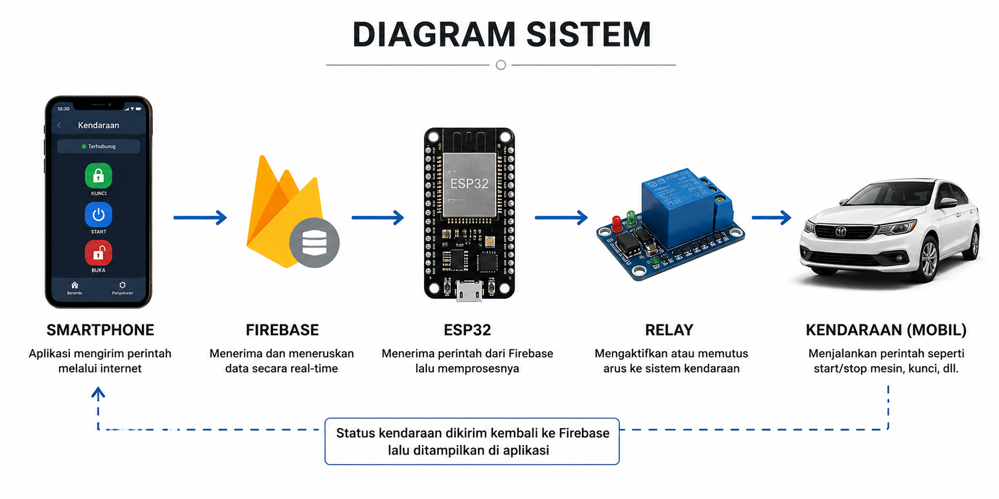
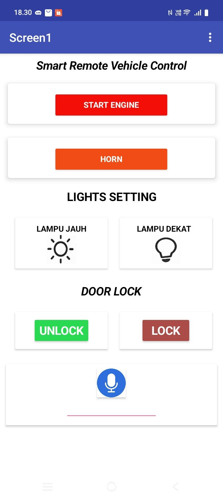
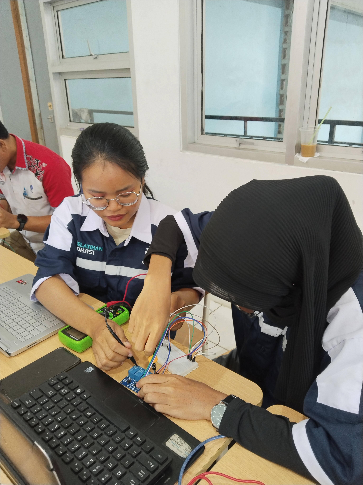
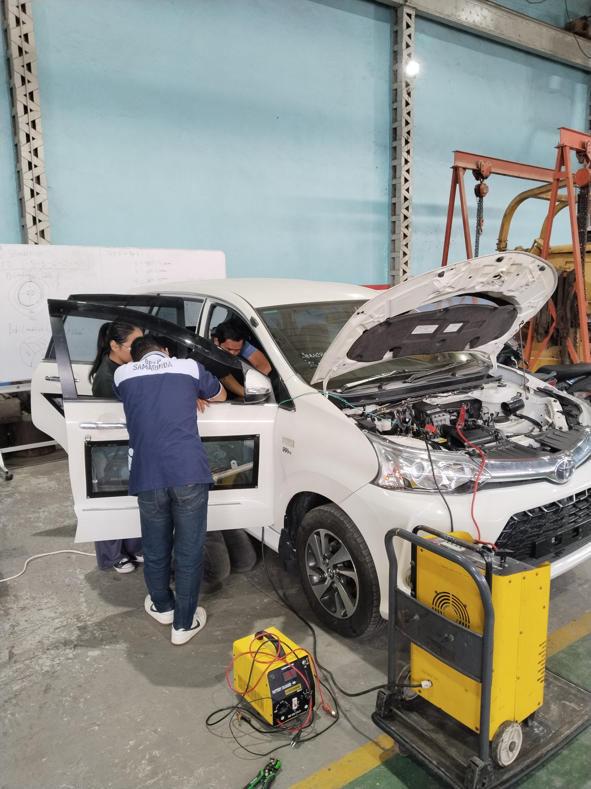
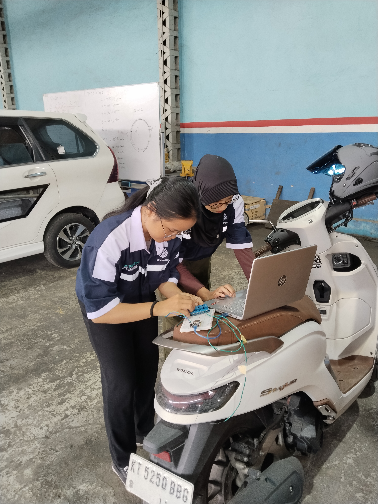
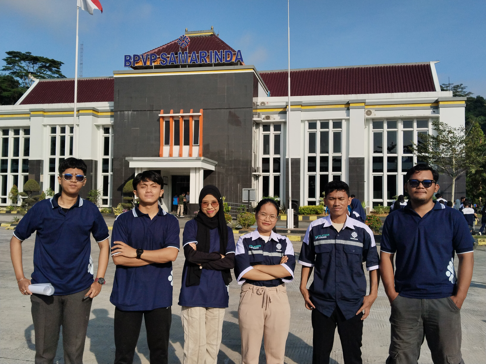
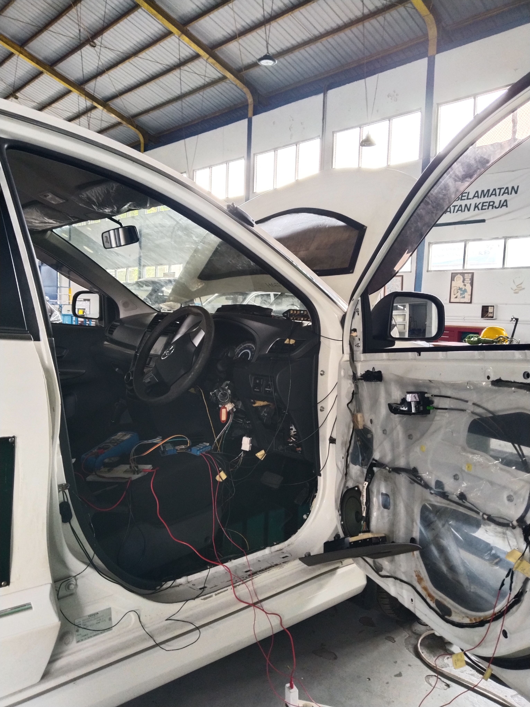
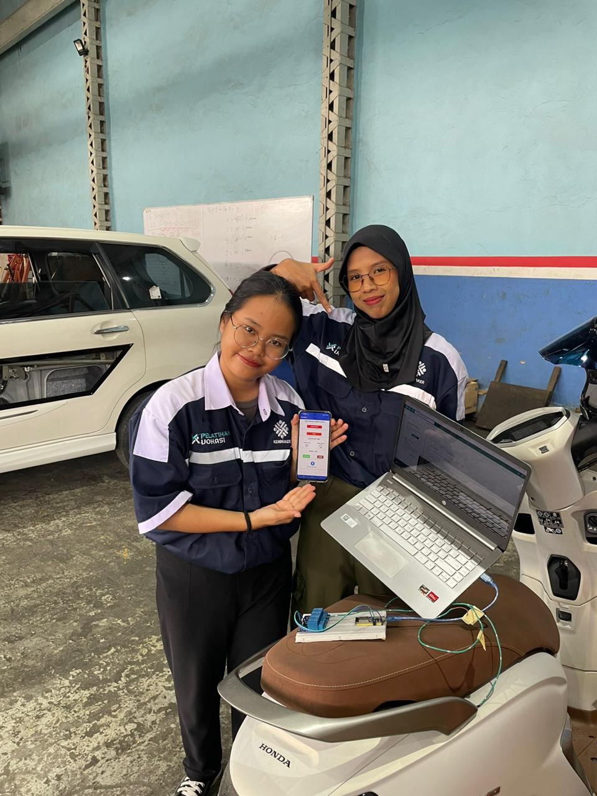

Sistem kendaraan berbasis IoT untuk mengontrol fungsi kendaraan secara realtime melalui aplikasi mobile.
Project ini merupakan sistem modifikasi kendaraan konvensional menjadi kendaraan dengan fitur kendali jarak jauh berbasis Internet of Things (IoT). Sistem dikembangkan menggunakan aplikasi mobile berbasis Kodular dan Firebase Realtime Database untuk komunikasi realtime antara aplikasi dan mikrokontroler kendaraan.
Project berhasil diselesaikan dan seluruh fitur sistem berfungsi dengan baik pada kendaraan sedan yang digunakan untuk pengujian dan implementasi sistem.

Aplikasi mobile digunakan untuk mengontrol fungsi kendaraan secara realtime melalui smartphone.

Dokumentasi proses pembuatan dan implementasi sistem kendali kendaraan berbasis IoT.






Tantangan utama pada project ini adalah menghubungkan sistem IoT dengan kelistrikan kendaraan agar tetap aman, stabil, dan dapat dikontrol secara realtime menggunakan internet.
Project dikerjakan secara kolaborasi dengan bidang otomotif untuk integrasi sistem kelistrikan kendaraan dan perangkat IoT.
Video demonstrasi implementasi sistem kendali kendaraan berbasis IoT menggunakan smartphone, Firebase Realtime Database, ESP32, dan relay pada kendaraan sedan.